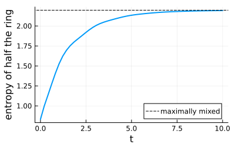

Defining Clock operators
This example defines the $Z_D$ clock operators in about twenty lines. The rest of the page uses nothing but that definition to study a dissipative clock ring: its symmetry sectors, the entanglement of its ground state, and how dephasing destroys it.
The pieces a new algebra needs are listed in Extending and performance hooks.
using FermionicHilbertSpaces, LinearAlgebra, Plotsimport FermionicHilbertSpaces: @field, AbstractBasisState, Op, apply_local_operator, local_mul_effect, mat_eltypeimport FermionicHilbertSpaces.NonCommutativeProducts: SwapThe definition
A clock has $D$ basis states $|n\rangle$, $n = 0, \dots, D-1$. The operator $X$ advances it, $X|n\rangle = |n+1 \bmod D\rangle$, and $Z$ reads it, $Z|n\rangle = \omega^n|n\rangle$ with $\omega = e^{2\pi i/D}$.
The kind of an operator says which one it is: $X$ or $Z$, to the power s = ±1, where -1 is the adjoint.
const D = 3struct Clock z::Bool s::IntendClock(k::Symbol) = k in (:X, :Z) ? Clock(k === :Z, 1) : throw(ArgumentError("A clock operator is `:X` or `:Z`, got `$(repr(k))`."))Base.adjoint(k::Clock) = Clock(k.z, -k.s)Base.show(io::IO, op::Op{Clock}) = print(io, op.mode, op.kind.z ? "[:Z]" : "[:X]", op.kind.s < 0 ? "'" : "")The clocks are the modes c[j] of a field, and c[j][:X] is the operator of kind Clock(:X) on c[j].
@field c::ClockcA basis state and the action of an operator on it give the matrix elements, which are complex.
struct ClockState{D} <: AbstractBasisState n::Int ClockState{D}(n) where {D} = new{D}(mod(n, D))endapply_local_operator(k::Clock, state::ClockState{D}, space, precomp) where {D} = k.z ? (state, cispi(2 * k.s * state.n / D)) : (ClockState{D}(state.n + k.s), complex(1.0))mat_eltype(::Type{Clock}) = ComplexF64mat_eltype (generic function with 10 methods)The last piece is the algebra on one clock: $X X^\dagger = Z Z^\dagger = 1$ and $Z X = \omega X Z$, which orders $X$ before $Z$.
function local_mul_effect(a::Clock, b::Clock) a.z == b.z && return a.s == b.s ? nothing : 1 return a.z ? Swap(cispi(2 * a.s * b.s / D)) : nothingendlocal_mul_effect (generic function with 8 methods)A clock ring
That is the whole definition. Now take a ring of $N$ clocks where $X_j^\dagger X_{j+1}$ moves one unit from site $j$ to its neighbour and a field couples to each clock,
\[H = -\sum_{j=1}^{N} \left(X_j^\dagger X_{j+1} + Z_j + \mathrm{h.c.}\right), \qquad X_{N+1} = X_1.\]
N = 4T(j) = mod1(j + 1, N)ham = -sum(c[j][:X]' * c[T(j)][:X] + c[j][:Z] + hc for j in 1:N)Sum with 16 terms:
-c[1][:X]'*c[2][:X]-c[1][:X]'*c[4][:X]-c[1][:X]*c[2][:X]' + ...Products are simplified with the rules of the algebra, and operators on different clocks commute. The total charge $\prod_j Z_j = \omega^{\sum_j n_j}$ commutes with the Hamiltonian.
ω = cispi(2 / D)@assert c[1][:Z] * c[1][:X] == ω * c[1][:X] * c[1][:Z]Q = prod(c[j][:Z] for j in 1:N)@assert ham * Q == Q * hamA Hilbert space needs the basis states of each clock. Matrix representations agree with the Kronecker products one would write by hand, where the first clock is the last factor.
states = [ClockState{D}(n) for n in 0:(D - 1)]H = hilbert_space(c, 1:N, states)X, Z = [0 0 1; 1 0 0; 0 1 0], Diagonal(ω .^ (0:(D - 1)))@assert representation(c[1][:X]' * c[2][:Z], H) ≈ kron(I(D^(N - 2)), Z, X')Charge and momentum sectors
A function of the basis state is a constraint. The charge $\sum_j n_j \bmod D$ splits the space into $D$ sectors.
charge(state) = mod(sum(s.n for s in state.states), D)Hq = constrain_space(H, charge)81-dimensional SectorHilbertSpace
Parent: ProductSpace(81-dim, 4 factors)
Sectors: [0 (27-dim), 1 (27-dim), 2 (27-dim)]The ring is also invariant under the translation T, and Relabel(T) => cispi(2k / N) keeps the states of momentum k: the momentum sectors, each still split by charge. The blocks of all charges and momenta together reproduce the spectrum of the full space.
using FermionicHilbertSpaces: RelabelHks = [constrain_space(Hq, Relabel(T) => cispi(2k / N)) for k in 0:(N - 1)]energies = [eigvals(Hermitian(representation(ham, sector(q, Hk), Matrix))) for q in 0:(D - 1), Hk in Hks]@assert sort(reduce(vcat, energies)) ≈ eigvals(Hermitian(representation(ham, H, Matrix)))[dim(sector(q, Hk)) for q in 0:(D - 1), Hk in Hks]3×4 Matrix{Int64}:
8 6 7 6
8 6 7 6
8 6 7 6Ground state and entanglement
The ground state has charge zero and momentum zero. embed takes it from its block to the space of all charges, where a lazy representation of the Hamiltonian confirms it.
H0 = sector(0, Hks[1])ψ = embed(eigvecs(Hermitian(representation(ham, H0, Matrix)))[:, 1], H0 => Hq)E0 = minimum(minimum, energies)@assert representation(ham, Hq, :lazy) * ψ ≈ E0 * ψThe reduced density matrix of half the ring comes from a partial trace. It gives the expectation values of that half, it is block diagonal in the charge of the half, and its entropy is the entanglement entropy.
HA = hilbert_space(c, 1:(N ÷ 2), states, charge)ρA = partial_trace(ψ, Hq => HA)bond = c[1][:X]' * c[2][:X]@assert tr(ρA * representation(bond, HA)) ≈ ψ' * representation(bond, Hq) * ψ@assert iszero(ρA[indices(0, HA), indices(1, HA)])entropy(ρ) = -sum(p * log(p) for p in eigvals(Hermitian(ρ)) if p > 1.0e-12)entropy(ρA)0.8314809561536135Dephasing
Now let the environment read each clock at the rate $γ$, with the jump operators $\sqrt{γ} Z_j$. open_system doubles the space for vectorized density matrices, and the Liouvillian is a symbolic operator on it.
using FermionicHilbertSpaces: dissipator, change_basisγ = 0.2Hlr, Hl, Hr, left, right = open_system(Hq)liouvillian = -1im * (left(ham) - right(ham)) + sum(dissipator(√γ * c[j][:Z]) for j in 1:N)Sum with 37 terms:
-0.7999999999999999I+(0.0 + 1.0im)*c(left)[1][:X]'*c(left)[2][:X]+(0.0 + 1.0im)*c(left)[1][:X]'*c(left)[4][:X]+(0.0 + 1.0im)*c(left)[1][:X]*c(left)[2][:X]' + ...The charges of the two copies are conserved separately, and translating both copies is a symmetry. The density matrices of charge zero that are invariant under translation form a small block of the doubled space.
Hlr0 = constrain_space(sector([0, 0], Hlr), Relabel(T) => 1)λ, V = eigen(representation(liouvillian, Hlr0, Matrix); sortby = abs)dim(Hlr0), dim(Hlr)(185, 6561)The block holds the steady state of charge zero, which is the uniform mixture of all states of that charge. Its slowest mode is an eigenvector of the Liouvillian on the doubled space, and decays at the rate gap.
density_matrix(v) = reshape(embed(v, Hlr0 => Hlr), Hlr => (Hl, Hr))steady = density_matrix(V[:, 1])P0 = Diagonal([charge(state) == 0 for state in basisstates(Hq)])@assert steady / tr(steady) ≈ P0 / tr(P0)slowest = embed(V[:, 2], Hlr0 => Hlr)@assert representation(liouvillian, Hlr) * slowest ≈ λ[2] * slowestgap = -real(λ[2])0.26296232701452954The ground state lies in the same block, so the eigenmodes of the block give its decay. Half of the ring goes from the entangled state above to the maximally mixed state.
v0 = change_basis(reshape(ψ * ψ', (Hl, Hr) => Hlr), Hlr => Hlr0; projection = true)ρ(t) = density_matrix(V * (exp.(λ * t) .* (V \ v0)))@assert ρ(0) ≈ ψ * ψ'@assert partial_trace(ρ(100 / gap), Hq => HA) ≈ I / dim(HA)ts = range(0, 10; length = 50)plot(ts, [entropy(partial_trace(ρ(t), Hq => HA)) for t in ts]; xlabel = "t", ylabel = "entropy of half the ring", label = "", lw = 2, size = (400, 250))hline!([log(dim(HA))]; ls = :dash, c = :black, label = "maximally mixed")
This page was generated using Literate.jl.